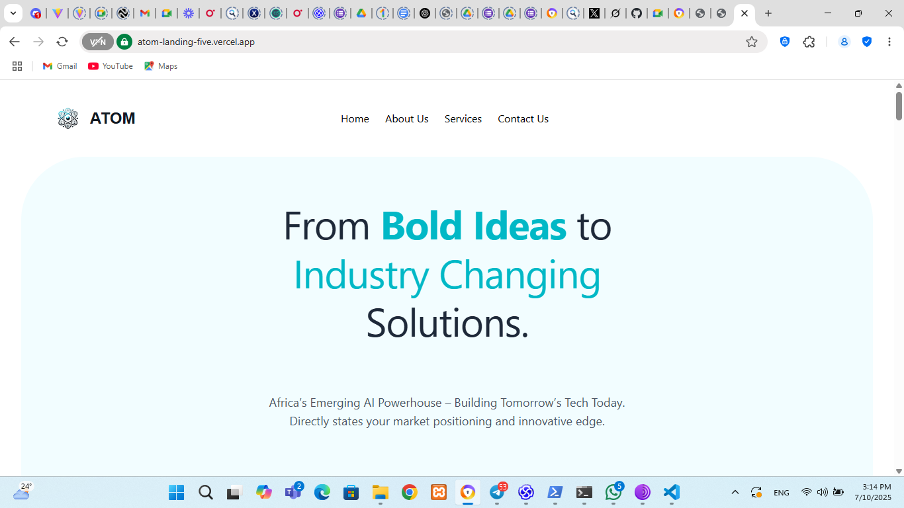

Designed and developed a modern, responsive landing page for an AI technology company. The goal was to create an engaging and professional online presence that effectively communicates the company's brand and services. The site features animated elements, detailed service showcases, and highlights of their key products to capture user interest.
Technologies Used
Vue
Typescript
JavaScript
Vercel